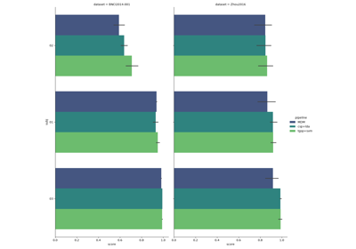
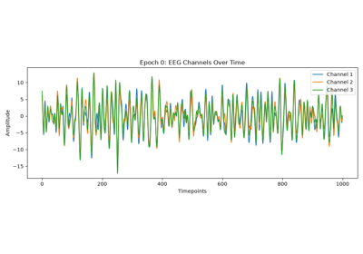
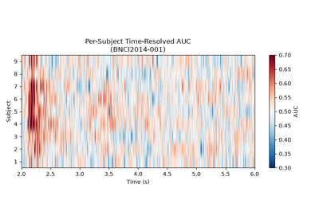
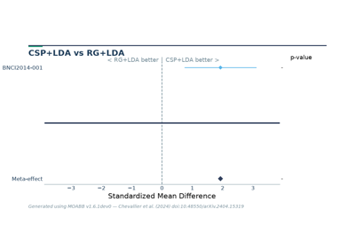
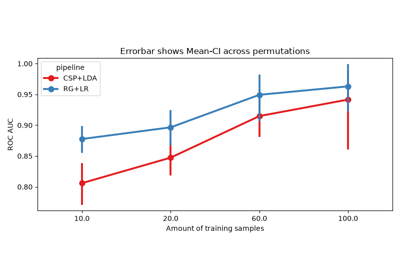

moabb.paradigms.LeftRightImagery#
- class moabb.paradigms.LeftRightImagery(fmin=8, fmax=32, events=None, tmin=0.0, tmax=None, baseline=None, channels=None, resample=None, scorer=None, overlap=None, reject_by_annotation=True)[source]#
Motor Imagery for left hand/right hand classification.
Metric is ‘roc_auc’ by default
- Parameters:
- property scoring#
Property that defines scoring metric (e.g. ROC-AUC or accuracy or f-score), given as a sklearn-compatible string or a compatible sklearn scorer.
Examples using moabb.paradigms.LeftRightImagery#


Tutorial 3: Benchmarking multiple pipelines
Tutorial 3: Benchmarking multiple pipelines

Cache on disk intermediate data processing states
Cache on disk intermediate data processing states
Explore Paradigm Object


Tutorial: Within-Session Splitting on Real MI Dataset
Tutorial: Within-Session Splitting on Real MI Dataset


Time-Resolved Decoding with SlidingEstimator
Time-Resolved Decoding with SlidingEstimator

Statistical Analysis and Chance Level Assessment
Statistical Analysis and Chance Level Assessment

Within Session Motor Imagery with Learning Curve
Within Session Motor Imagery with Learning Curve